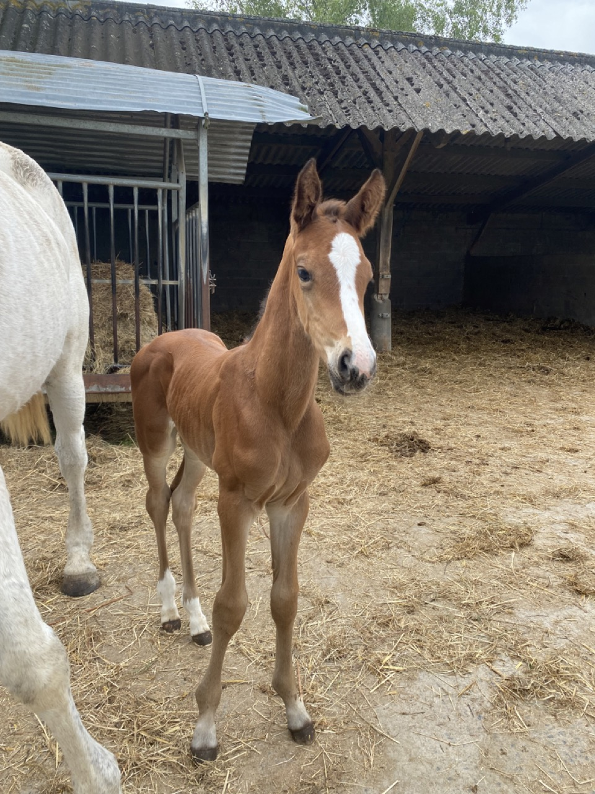

Ici, nous partageons notre passion pour les chevaux à travers de nombreuses disciplines, adaptées à tous les niveaux et envies. Que vous soyez amateur de randonnée, de saut d’obstacles (CSO), de cross, de dressage, travail à pied, ou intéressé par l’élevage et les retraites paisibles pour vos chevaux, vous trouverez votre bonheur chez nous.
De plus, nous cultivons nous-mêmes nos céréales, notre foin et notre paille, assurant ainsi une alimentation de qualité et un confort optimal pour vos chevaux.
Notre élevage est le cœur battant de notre écurie, situé près de Nantes. Spécialisés dans la production de chevaux de course, de chevaux et poneys de sport ainsi que de chevaux de loisir, nous mettons un point d'honneur à élever des animaux d'exception. Nos poulains bénéficient des meilleures conditions dès leur naissance, avec une attention particulière portée à leur bien-être, leur éducation et leur développement.
Équipé de technologies modernes, notre équipe expérimentée garantisse un suivi rigoureux et personnalisé de chaque cheval. Nous sélectionnons minutieusement les lignées pour obtenir des animaux robustes et talentueux, capables de répondre aux exigences des disciplines les plus variées. En intégrant les dernières avancées en matière de nutrition, de soins vétérinaires et de techniques d'entraînement, nous assurons à nos chevaux les meilleures conditions de croissance et de développement. Venez découvrir notre élevage et laissez-vous séduire par nos chevaux d'exception, qui sauront répondre à toutes vos attentes.
Poulain né le 05/05/24 par Giovani de la Pomme. lignée maternelle avec Papillon Rouge et Double Espoir.
Nous sommes ravis de vous proposer deux formules de pension adaptées aux besoins de votre cheval et à vos attentes.
Votre cheval bénéficiera d’un confort optimal dans nos boxes spacieux. En hiver, il sera sorti quotidiennement au paddock pour se dégourdir les jambes et profiter de l’air frais. L’été, il profitera des vastes prairies verdoyantes pour une vie au pré, idéale pour son bien-être et sa détente. Cette formule combine la sécurité et le confort du boxe avec la liberté des sorties régulières.
Offrant une ambiance plus naturelle, cette formule permet à votre cheval de vivre en stabulation ouverte durant l’hiver, favorisant les interactions sociales et la liberté de mouvement. En été, il rejoindra les prés pour profiter pleinement des beaux jours. Cette formule est parfaite pour les chevaux ayant besoin d’un cadre de vie plus libre et collectif.

Nos installations modernes et bien entretenues sont conçues pour répondre aux besoins de tous les cavaliers et de leurs chevaux. Nous disposons d’un rond de longe, parfait pour le travail en liberté, les séances de mise en condition et le débourrage des jeunes chevaux. Notre grande carrière est équipée de divers obstacles, offrant un cadre idéal pour l’entraînement de saut d’obstacles, le dressage et les sessions polyvalentes.
En outre, nous avons récemment réaménagé une parcelle de pré pour créer un terrain d’initiation au cross. Ce parcours comprend un gué, des troncs d’arbres et une butte, permettant aux cavaliers et à leurs montures de s’initier aux joies et aux défis du cross-country en toute sécurité. Ces installations diversifiées offrent des opportunités d'entraînement variées et stimulantes pour tous les niveaux.
Ce site a été entièrement réalisé par Chauveau Gabrielle. Le code a été réalisé sur Visual Studio Code. Toutes les photos appartiennent exclusivement au créateur de la page.